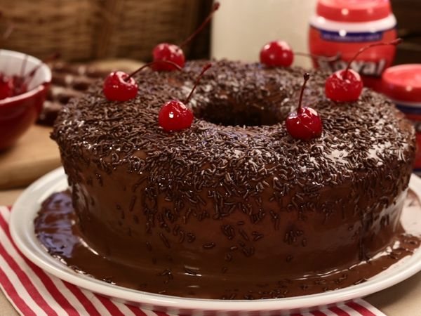

Gericó Top Top
Bolo de Chocolate

Ingredientes
Massa
- 4 Ovos
- 4 colheres (sopa) de chocolate em pó
- 2 colheres (sopa) de manteiga
- 3 xícaras (chá) de farinha de trigo
- 2 xícaras (chá) de açúcar
- 2 colheres (sopa) de fermento
- 1 xícara (chá) de leite
Calda
- 2 colheres (sopa) de manteiga
- 7 colheres (sopa) de chocolate em pó
- 2 latas de creme de leite com soro
- 3 colheres (sopa) de açúcar
Modo de Preparo
Em um liquidificador adicione os ovos, o chocolate em pó, a manteiga, a farinha de trigo, o açúcar e o leite, depois bata por 5 minutos
Adicione o fermento e misture com uma espátula delicadamente
Em uma forma untada, despeje a massa e asse em forno médio 180 ºC, preaquecido por cerca de 40 minutos
Em uma panela, aqueça a manteiga e misture o chocolate em pó até que esteja homogêneo
Acrescente o creme de leite e misture bem até obter uma consistência cremosa
Desligue o fogo e acrescente o açúcar
Voltar